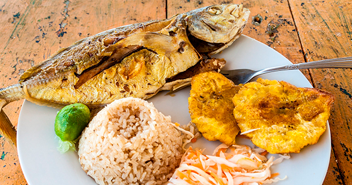

Platos Tipícos
Arroz bochinche
Es una combinación de arroz blanco con longaniza y carne de cerdo, bañado con una salsa hecha de tomate, cebolla, ajo, zanahoria, habichuelas y arveja. Es más sencillo cocinar la carne por un lado y la salsa por otro, antes de juntar todo en la misma olla.
Pescado frito
Hablar de pescado frito es una generalidad pues la lista es interminable en Colombia. Pero en el Chocó se suelen utilizar solo los siguientes pescados: Bocachico, Foforro, Barbudo y Sábalo. La receta en sí no es muy compleja, se le deben quitar las escamas al pescado, y luego se debe freír en aceite a una temperatura no muy alta para que no quede tostado tan rápido y se cosa bien por dentro. Aquí vuelve a aparecer el arroz como acompañante. En muchos casos se sirve arroz con coco para brindarle un sabor más intenso. También se le suele agregar al plato patacones con hogao o con queso y limón.
- Sopa de Queso
- Arroz clavado
- Arroz con longaniza